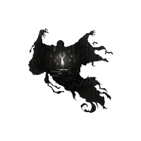
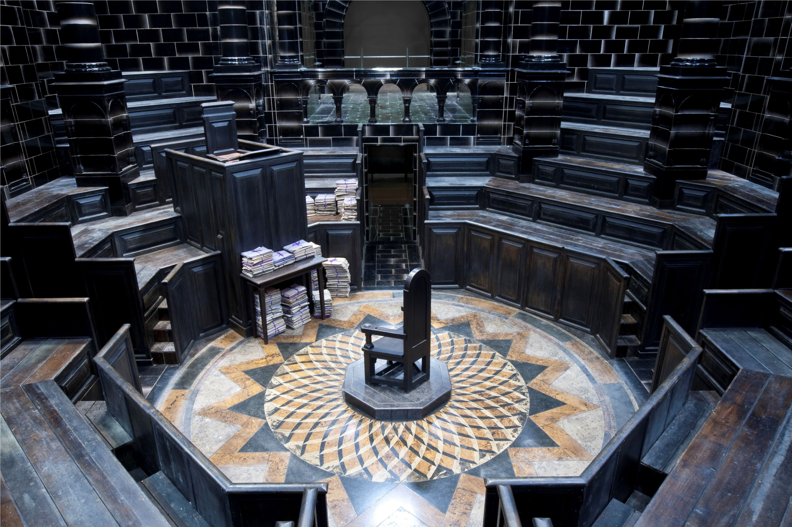

O Ministério da Magia Britânico empregou dementadores como os guardas de Azkaban até meados de 1996, quando Lord Voldemort foi avistado no Ministério e sua deserção para o lado das trevas aconteceu. 
O Ministério da Magia (MoM) é o principal órgão de governo da comunidade mágica da Grã-Bretanha (ou seja, Inglaterra, Escócia e País de Gales) e Irlanda com a intenção de preservação da lei mágica. O Ministério conecta ao governo britânico para o mundo bruxo. A sede do Ministério esta em Whitehall, no centro de Londres, no subterrâneo profundo.[1] Ele é chefiada pelo Ministro da Magia. A atual ministra da Grã-Bretanha é Hermione Granger.
O Ministério da Magia foi formalmente estabelecido em 1707 com a nomeação do primeiro homem a receber o título de "Ministro da Magia", Ulick Gamp. O Ministro da Magia é democraticamente eleito, embora tenha havido tempos de crises nos quais o posto tenha simplesmente sido oferecido a indivíduos sem o voto popular. Não existe um limite fixo para o tempo de mandado de um Ministro, mas ele ou ela é obrigado a realizar eleições num máximo intervalo de 7 anos. Ministros da Magia tendem a durar muito mais do que Ministros trouxas. Genericamente falando, e apesar dos muitos lamentos e resmungos, a comunidade deles está atrás deles de um modo que é raramente visto no mundo trouxa. Isto é, talvez, devido ao sentimento, da parte dos bruxos, de que a menos que eles sejam vistos para administrar eles mesmos competentemente, os trouxas podem tentar interferir.